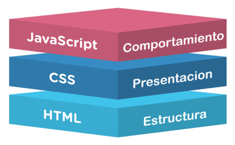

JavaScript es un lenguaje de programacion que los desarrolladores utilizar para hacaer pagias web interactivas. Desde utilizar fuentes de redes sociales a mostrar animaciones y mapas interativos, las funciones de JS mejorar la experienca del usuario al momento estar en el sitio web. Como lenguaje de scripting del lado del servidor, se trata de una de las principaes tecnologias de la World Wide Web. Por ejemplo: Al momento en que navegas por internet o pagina web puedes encontrar un carrusel de imagenes, un menu desplegable o quiza cambien de manera dinamica los elementos de color en una pagina Web
JavaScript fue creado por Brendan Eich en mayo de 1995, mientras este
trabajaba para Netscape Communicactions
Este se lanzo por primera vez con Netscape 2 a principios de 1996. Originalmente se se llamaria LiveScript
pero se cambio el nombre por una decision de marketing
que intento capitalizar la popularidad del lenguaje Java de Sun Microsystem.
El proposito con el que se creo fue para permitir que las paginas fueran mas interactivas, y no solamente
fueran paginas estetcias, tambien se diseño para
generar contenido de forma dinamica, sin la necesidad de recargar la pagina completa. La idea era tener un
leguaje facil y sencillo de usar para que cualquiera
pudiera darle un poco mas de vida a las paginas web, agregando funciones directamente en el navegador y
haciendo la experiencia del usuario mas dinamica del lado del cliente.
Java es un leguanje de programacion orientado a objetos el cual se usa para poder crear
apliciaciones grandes, seguras y
que sean funcionables en diferentes sistemas. En cambio JavaScript es un leguanje mas
ligero para poder darle vida a las paginas web dentro del navegador, el cual
tiene una forma de escribir mas flexible y que es menos estricta
Los nombres no estan directamente enlazados o relacionados; el parecido fue mas que nada por marketing en
los 90 para poder aprovechar las relevancia y la fama que tenia Java en ese entonces.
JavaScript, HTML y CSS se c¿juntan para darle forma a una pagian: HTML arma la estrcutrua y el contendio,CSS se encarga de que todo se vea bien ya sea con colores, estilos y diseño, y por ultimo JavaScript le da vida a una pagina con interactividad, haciendo que los elementos reaccionen a lo que el usuario hace.
JavaScript es un lenguaje de programacion que se caracteriza por tener una sintaxis similar a la del lenguaje C, lo que lo hace facil de aprender para aquellos que ya estan familiarizados con este lenguaje. La sintaxis de JavaScript es bastante flexible y permite a los desarrolladores escribir codigo de manera concisa y legible. A continuacion, se presentan algunos conceptos basicos de la sintaxis de JavaScript:
let nombre = "Juan"; let number = 10;
let string = "Hola";
let boolean = true;
let null = null;
let undefined;
let object = { nombre: "Ana", edad: 20 }; let suma = 5 + 3; (Aritmetico: +, -, * , /, %)
let igual = 5 == "5"; (Comparación: ==, ===, !=, !==, >, <, >=, <=)
let logico = true && false; (Lógicos: &&, ||, !) if (edad >= 18) {
console.log("Mayor de edad");} else { console.log("Menor de edad");}for (let i = 0; i < 5; i++) {
console.log("Número: " + i); }function saludar(nombre) {
return "Hola " + nombre;
}
console.log(saludar("Ana"));// Esto es un comentario de una sola línea
/* Esto es un comentario
de varias líneas */La principal difrenecta entre var, let, y const tiene que ver con donde se puede
utilizar la variable y si su valor se puede cambiar o no.
Var tiene alcance de funcion, se puede reasignar y re-declarar, pero hoy en dia se evita porque puede llegar
a generar errores. Let tiene alcance de bloque, se puede cambiar su valor
pero no se puede declarar dos veces en el mismo bloque, lo que lo hace mas seguro. Const, tambien con
alcance de bloque,
no se puede reasignar ni re-declarar y debe inicializarse al declarala, por eso se ua para valores que no
cambian
Asi que, usa const para cosas que siempre van a ser iguales
let para valores que cambian, por ultimo var aunque puede que sea confunso
igual se puede seguir usando.
Los tipos de datos primitivos en JavaScript son los siguientes:
let edad = 25;
let precio = 19.99let nombre = "Anda"let esMayor = true; let valorNulo = null;let valorIndefinido;let numeroGrande = 1234567890123456789012345678901234567890n;let simbolo = Symbol("descripcion");Su diferencia principal es que los arrays almacenan colecciones ordenadas de valor utlizando inidces numerico
(como [0], [1])
, mientars que los objetos almacenan colecciones de pares clave-valor, donde cada valor se accede mediante
una clave unica (como nombre: "Ana", edad: 20).
En JavaScript, los operadores son simbolos que le dicen al programa que hacer con los valores. Hay tres
principales que se utilizan mucho
en la programacion: aritmeticos, logicos y relacionales.
Operadores Aritmeticos: Estos operadores se utilizan para realizar operaciones matematicas
basicas como suma, resta, multiplicacion y division. Algunos ejemplos son:
let edad = 18;
if (edad >= 18) {
console.log("Eres mayor de edad");
}let edad = 16;
if (edad >= 18) {
console.log("Eres mayor de edad");
} else {
console.log("Eres menor de edad");
}let dia = 3;
switch (dia) {
case 1:
console.log("Lunes");
break;
case 2:
console.log("Martes");
break;
case 3:
console.log("Miércoles");
break;
default:
console.log("Día no válido");
}
for (let i = 0; i < 5; i++){
console.log(i);
}let i = 0;
while (i < 5) {
console.log(i);
i++;
}let i = 0;
do {
console.log(i);
i++;
} while (i < 5);En JavaScript, break sale por completo del un bulce, transfiriendo el control del programa a la siguiente instruccion del bulce. Luego tenemos continue termina la iteracion actual del bucle y pasa rapidamente a la siguiente, sin salir del bulce
En JavaScript, declarar una funcion significa crear un bloque de codgio que puedes usar varias veces, y llamarla es ejecutarla cuando la necesites
function saludar(nombre) {
console.log("Hola, " + nombre + "!");
}
// Llamar a la función
saludar("Ana"); // Salida: Hola, Ana!Al momento que una funcion tiene parametros y un valor de retorno significa lo siguiente:
function sumar(a, b){
return a + b}let resultado = sumar (2, 3) //5, el valor que devuelve la funcion
console.log(resultado);Las funciones flecha son una forma mas corta de escribir funciones. Ejemplo
//Funcion normal
function sumar(a, b) {
return a + b;
}
//Funcion flecha
const sumar = (a, b) => a + b;El Scope define donde se puede usar una variable dentro del codigo. Determianr la "zona" en la que una variable existe y puede ser accedida, en si afecta a las variables porque define donde se pueden usar y ayuda a evitar conflictos o errores en el codigo.
En JavaScript, para declarar un objeto solo necesitas usar llavas {} y dentro poner pares clave-valor, donde cada clave es el nombre de la propiedad y el valor es lo que guarda esa propiedad. Por ejemplo:
let persona = {
nombre: "Ana",
edad: 25,
trabajo: "Cuidando gatitos"
};// Notación de punto
console.log(persona.nombre);
// Notación de corchetes
console.log(persona["edad"]);En JavaScript, una propiedad es un dato que describe alguna caracteristica del objeto, como un nombre, edad o color. En cambio, un metodo es una funcion que forma parte del objeto y srive para realizar alguna accion o comportamiento usando sus propiedades
let frutas = ["manzana", "platano"];
frutas.push ("fresa");
console.log (frutas) //manzana, platano, fresa frutas.pop()
console.log (frutas); //manzana, platanolet numeros = [1, 2, 3];
llet dobles = numeros.map(n => * 2);
console.log(dobles); //[2, 4, 6]El Modelo de Objeto de Documento (DOM) es una representacion estructurada en forma de arbol de una pagina web
que actuca como un puente entre el codigo
JavaScript y el contenido HTML, permitiendo manipular dinamicamente su estructura y su estilo.
Es importante porque permite que JavaScript haga que las paginas web sean dinamicas e interactivas. Con el,
se pueden respodern a eventos del usuario
, cambiar el contenido de los elementos, modificar su estilo y actualizar la info sin recargar la pagina.
Ademas, su estrandarizacion asegura que estas acciones funcionen de manera consistente en distintos
navegadores.
Es cualquier accion que ocurre en la pagina y a la que el programa puede reaccioanr como algo que hacer el usuario o que sucede automaticamente.
En JavaScript, alert, prompt, y console.log se usan para mostrar informacion, pero estas funcionan de manera distina.